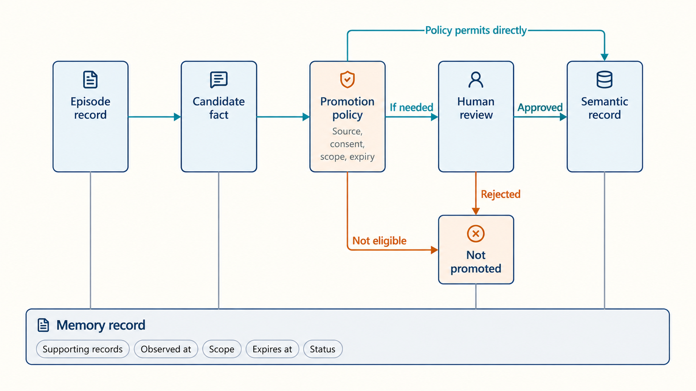

11 Persistent memory across sessions
A later conversation may need information from an earlier one: a delivery preference, the outcome of a support request, or a procedure tested in a previous release. That information should not be copied into every request or kept forever by default. Persistent memory is information stored for reuse across sessions. The application decides which information may be stored, who may retrieve it, and how it is corrected or removed.
![Five memory topics. Current-task state is separate from cross-session events, facts and procedural assets; a write policy controls capture while RAG supplies a read path. Episodic retrieval selects dated events for the current task. A candidate fact passes source, consent, scope and expiry checks before storage; only eligible facts are ranked during retrieval. Separate correction and deletion branches update records and existing indexes and caches. Versioned procedures distinguish a reviewed version, the version run, and an earlier version.](../assets/fig-m1-c11-f01.png)
The map follows storage and reuse, dated events, current facts, correction and deletion, and versioned procedures. Chapter 9’s session checkpoint restores an unfinished run. This chapter asks what may be reused beyond that session. A checkpoint can be durable without becoming a user profile or permission to reuse its contents for another task.
11.1 Memory storage and reuse
A later session may need a preference, an earlier event, or a tested procedure that is absent from the current request. The application needs rules for choosing what may be stored and reused. Without those rules, it may save every message and later supply stale, irrelevant, or unauthorized information.
RAG in Chapter 6 supplies a read path: find permitted evidence and place it in a request. A memory system may use that same retrieval machinery. It also needs a write path: capture a candidate, check whether it may become durable, and later correct, expire, or delete it. Similarity search alone does not make those decisions.
Sumers et al.1 distinguish four memory roles: active task state, records of earlier events, facts, and knowledge of how to act. Their framework includes both current state and longer-term knowledge. The following descriptions apply those roles to this application’s choices about storing, reviewing, and versioning information. Saving task state for recovery does not automatically permit reuse in another session. These roles do not require four physical databases.
- Working memory: The active state for the current task, including goals, plans, evidence, tool definitions, and observations. The application selects part of it for each model request.
- Episodic memory: Timestamped records of earlier interactions, actions, and outcomes that an application may retrieve for a later request.
- Semantic memory: Curated facts or preferences that an application stores separately from the events from which they were derived.
- Procedural memory: The agent’s model parameters and reusable code or instructions that determine how it performs a task.
Persistent records can retain information that cannot be reconstructed from the current request, such as a previously stated preference. Reuse is worthwhile when the information is relevant, permitted, and current enough for the task, and its benefit justifies storage, retrieval, and review costs.
| Memory type | Content | Typical store | Key control question |
|---|---|---|---|
| Working | Active task state, messages, plan, and tool observations | Application state with a selected portion in the request context | What deserves scarce context tokens now? |
| Episodic | Timestamped interactions and outcomes | Event log or vector/time index | Which past event is relevant and permitted? |
| Semantic | Curated facts and preferences | Profile, knowledge graph, or fact store | Is the fact valid, scoped, current, and correctable? |
| Procedural | Knowledge in model parameters and reusable code or instructions | Model parameters and versioned code or instruction assets | Who reviewed the procedure and which version ran? |
- Memory system: The database, index, and application logic that manages persistent state across agent sessions.
- Capture: The process of identifying candidate information from the conversation and associating it with a source.
- Promotion: The policy-controlled decision to store a captured candidate as a durable fact or procedure after checking its source, identity, scope, confidence, retention rule, and required human approval.
These categories help the application apply different storage and reuse rules. Separation alone enforces no rule: capture and promotion checks determine whether a past message may become a durable, reusable fact.
11.2 Episodic memory: retrieving earlier events
A later question may need one event from a long conversation rather than the whole history. Working memory holds active task state, while episodic memory keeps dated events that the application may retrieve into that state. The request context contains only the selected portion that fits alongside instructions and reserved output space.
Irrelevant history can crowd out policy, evidence, and output space even when it fits within the context window.
The application selects system policy, current objectives, active plans, retrieved evidence, tool definitions, and relevant observations for the next request. It reserves output tokens separately. Summaries can reduce history size, but may lose details, so important claims should retain references to their source events. To preserve a commitment across turns, the application can store a separate record of the promise, responsible party, approval condition, and source event. It can retrieve that record when relevant, under rules for correction, review, access, and deletion.
Semantic similarity alone is weak for temporal questions. Episodic retrieval often needs user, session, time, entity, and access filters alongside embeddings.
An episodic store captures event identity, timestamps, actor roles, actions, observations, and the source record. Retrieval applies user and access filters before ranking, and time or entity filters when the question requires them. For example, “which delivery address did I give before the move?” needs the correct user’s events from before the move, not merely the most similar address message. The application loads the selected event into working memory and preserves its date in the answer evidence. A summary should retain a stable source reference while the source may be kept. If that source expires or is deleted, the summary must be removed, updated, or excluded according to the same policy.
Conversation history is user data, not free application context. The accountable product owner or data policy owner defines retention and deletion rules, and application code enforces them when storing, retrieving, expiring, and deleting records. Evaluation should measure episodic recall, irrelevant records injected into context, harm from stale facts, and compliance with the applicable rules.
11.3 Semantic memory: promoting and ranking facts
Episodic memory preserves dated events and their outcomes. Raw events do not automatically become reliable current facts, especially when observations conflict or user preferences change. Semantic memory introduces an explicit promotion and correction process before a fact becomes reusable across sessions.
Storing extracted statements without review can create duplicate, stale, conflicting, and mis-scoped profile records. Promotion therefore needs a schema, confidence rule, scope, source record, conflict policy, and correction path.

The promotion step is an application policy. The model may propose a candidate memory, but deterministic code or human review decides whether it becomes durable.
After identity, permission, status, and deletion filters remove ineligible records, the application ranks remaining records by relevance, freshness, and source reliability.
\[ S(m,q)=w_r\mathrm{relevance}(m,q)+w_f\mathrm{freshness}(m)+w_s\mathrm{reliability}(m) \tag{11.1}\]
Here, \(m\) is an eligible record and \(q\) is the request. The component functions return relevance, freshness, and reliability scores. Product weights \(w_r\), \(w_f\), and \(w_s\) balance these scores to rank candidates without overriding access rules.
Freshness needs a defined clock and a valid observation time. This example rejects future observed_at values and computes a nonnegative age in days when the record is read. With a 30-day useful-life horizon, freshness is the larger of zero and 1 - age_in_days / 30. A record observed 6 days ago receives 0.8, while one at least 30 days old receives 0 and should normally be refreshed or excluded. An expires_at rule can remove a record before ranking. The 30-day horizon is only an example. It must reflect how quickly the underlying fact changes. The application compares the ranking with reviewed retrieval choices. The score is not a probability of truth.
In the example below, each component uses a 0 to 1 scale, and the weights express the product’s chosen trade-off. Another design can use other scales or weights that do not sum to one.
Example 11.1: Rank two eligible memory records
Suppose two permitted records can help answer a question. The weights are 0.5 for relevance, 0.3 for freshness, and 0.2 for source reliability. Record A scores 0.8, 0.6, and 1.0; Record B scores 0.9, 0.2, and 0.8. Under the 30-day freshness rule, A’s score of 0.6 represents a record 12 days old.
- Record A: 0.5 × 0.8 + 0.3 × 0.6 + 0.2 × 1.0 = 0.78.
- Record B: 0.5 × 0.9 + 0.3 × 0.2 + 0.2 × 0.8 = 0.67.
Result: Record A ranks above B despite B’s higher relevance.
Interpretation: The chosen weights trade some relevance for freshness and source reliability. The arithmetic does not establish that this trade-off improves answers, which needs reviewed retrieval tests. A deleted, unauthorized, or wrong-subject record remains ineligible regardless of its score.
See Example 11.2 for the implementation.
Example 11.2: A semantic fact record carries lifecycle metadata.
This Python record describes a fact’s fields, not a validator. For a stored delivery address, subject_id identifies the user. The predicate is delivery_address, and value contains the address. The application defines identity, category, intended-use scope, source tracking, and retention rules. source_episode_ids identifies the conversations or events from which the fact was derived. The provenance field holds references to supporting records checked during validation. The dataclass constructor requires the declared fields, but does not check their annotated types or allowed values. The store must validate the status, identity, scope, confidence, and dates before accepting the record.
from dataclasses import dataclass
from datetime import datetime
from typing import Literal
@dataclass
class MemoryFact:
subject_id: str
predicate: str
value: str
category: str
scope: str
source_episode_ids: list[str]
provenance: list[str]
confidence: float
observed_at: datetime
created_at: datetime
reviewed_at: datetime | None
expires_at: datetime | None
status: Literal["candidate", "active", "superseded", "deleted"]11.4 Correction and deletion
The record describes what a fact stores. The next fragment shows when the application may store it and how deletion reaches the locations that serve it.
- Tombstone: A small record stating that an item was deleted or replaced, without retaining the removed value. Replicas and indexes use it to avoid restoring an old copy during synchronization.
See Example 11.3 for the implementation.
Example 11.3: Promotion stores the complete active fact. Deletion cleans the listed stores in sequence and reports completion only after those calls succeed.
This abbreviated Python fragment uses MemoryFact and application-supplied policy, validation, store, index, cache, and audit helpers. require raises on a failed condition. validate_candidate checks the record’s values and supporting evidence. The caller then checks that validation has not changed its subject, category, or scope, and stores the whole validated record as active with the policy’s expiry. This example requires category consent, although another product may use a different approved authority. authorize_delete checks the caller and record before removal. Helper exceptions propagate to the surrounding workflow, which must record partial cleanup and retry it. The fragment has no automatic retry or cross-store transaction.
from dataclasses import replace
def promote_memory(candidate: MemoryFact, user):
require(candidate.status == "candidate")
require(candidate.subject_id == user.id)
require(candidate.source_episode_ids and candidate.provenance)
require(isinstance(candidate.observed_at, datetime))
require(user.consent_for(candidate.category))
approved_use = (candidate.subject_id, candidate.category, candidate.scope)
verified = validate_candidate(candidate)
require(verified.status == "candidate")
require((verified.subject_id, verified.category, verified.scope) == approved_use)
active = replace(
verified, status="active", expires_at=retention_policy(verified),
)
return memory_store.put(active)
def delete_memory(user, memory_id):
authorize_delete(user, memory_id)
memory_store.tombstone(user.id, memory_id)
derived_indexes.remove(memory_id)
cache.invalidate(memory_id)
deletion_audit.record_without_value(user.id, memory_id)
return {"status": "deleted", "memory_id": memory_id}Promotion retains the fact’s identity, predicate, value, supporting records, confidence, dates, and intended-use scope. Deletion follows three stages:
- Mark the primary record deleted.
- Remove its index entries and cache copy.
- After every listed cleanup step succeeds, return
deletedand write the value-free completion audit.
If index removal fails, the exception stops later calls, so the cache may still contain the value and no completed-deletion audit is written. Reads must check the primary deletion status even during cleanup. The helpers must make repeated cleanup safe, as Section 8.2 explains for idempotent operations. Replicas, backups, exports, and other copies need separate removal or restoration rules. The audit records completion of the listed steps, not proof that every copy everywhere was erased.
Correction rule
When a new fact conflicts with an active fact, check identity, intended use, observation time, and supporting records. If the new value is a correction, mark the old record superseded and make it ineligible for retrieval. Otherwise, retain it only for a distinct valid use. Keep the change visible to the user when appropriate.
A candidate statement may remain in the episodic record while its retention rules permit. Evidence, consent where relevant, confidence, and intended use determine whether it can be promoted to a durable profile fact. Failure to promote it does not authorize keeping it indefinitely.
Conflict resolution compares identity, time, source reliability, and whether the new statement corrects or supplements the old one. For example, a user’s new delivery address supersedes the old address for current deliveries, while the old event may still support a permitted question about a past order. Superseded facts are excluded from current-fact retrieval and stay traceable only while retention permits. Wu et al.2 use LongMemEval to test temporal updates, multi-session reasoning, and abstention when the needed information is absent. Product evaluation also measures retrieval utility, stale-fact use, correction success, cross-user isolation, and deletion propagation.
11.5 Procedural memory: versioned instructions and tools
Correcting a stored fact changes what the application knows about a user or event. Changing a reusable instruction or tool can alter every later action that uses it. The application retrieves semantic records as task context, while versioned prompts, tools, and workflows determine which actions the agent loop can propose. These procedures need tests and release controls before a new version runs.
A reusable workflow encoded as a tool or instruction asset saves the agent from re-deriving behavior. It can also preserve a mistake indefinitely. The application therefore records the procedure version with every run and uses conformance tests. A user preference belongs in semantic memory, while a system rule belongs in procedural memory.
Suppose procedure version 1 creates a refund draft and version 2 adds a new eligibility check. Review compares the rule with the approved policy, tests permitted and denied cases, and releases version 2 only if those checks pass. Each execution records version 2 and its result. If monitoring reveals a regression, the application stops affected work and restores a tested version that still satisfies current policy. Rolling back to an obsolete policy would not be a valid recovery. This is an illustrative release trace, not a measured improvement.
The table brings together the chapter’s memory controls, from capture to expiration or deletion.
| Lifecycle stage | Memory question | Evidence |
|---|---|---|
| Capture | What event or candidate fact is worth storing? | Eligibility rule, required authority, supporting source, sensitivity label |
| Promote | Should this candidate become a durable fact or procedure? | Validation, confidence, review where required, and intended-use scope |
| Retrieve | Which memory is relevant to this task and user? | Filters, rank, freshness, authorization, token cost |
| Use | How did memory affect the decision or answer? | Injected memory IDs and trace attribution |
| Correct | How are conflicts, user corrections, and stale data handled? | Supersession record and regression test |
| Forget | When must data expire or be deleted? | Retention schedule, cleanup status, downstream removal, and restore rules |
Chapter conclusion
Persistent memory selects information for later sessions under rules for storage, access, correction, and deletion. RAG can retrieve those records, but retrieval does not decide which records may exist or remain current. Procedures need reviewed versions and tests because a saved instruction can change future actions, not just future answers.
Sumers, T. R., Yao, S., Narasimhan, K., & Griffiths, T. L. (2024). Cognitive architectures for language agents. Transactions on Machine Learning Research. https://arxiv.org/abs/2309.02427. The paper organizes memory into working, episodic, semantic, and procedural forms.↩︎
Wu, D., Wang, H., Yu, W., Zhang, Y., Chang, K.-W., & Yu, D. (2025). LongMemEval: Benchmarking chat assistants on long-term interactive memory. In International Conference on Learning Representations. https://arxiv.org/abs/2410.10813. The benchmark tests information extraction, multi-session reasoning, temporal reasoning, knowledge updates, and abstention.↩︎